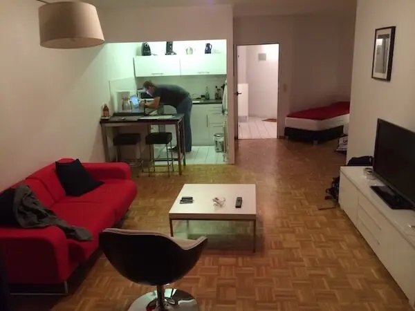
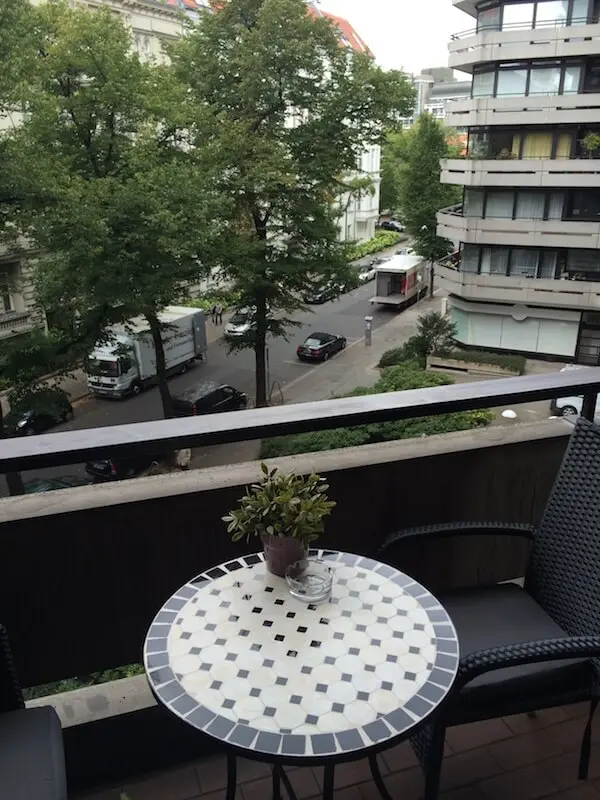
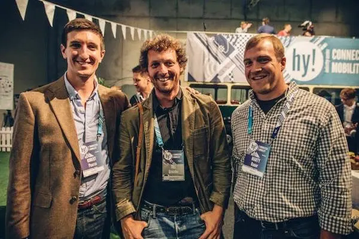
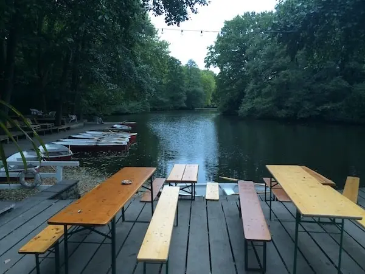
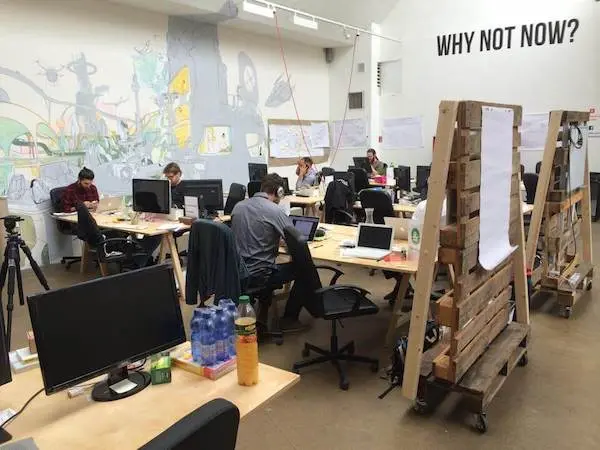
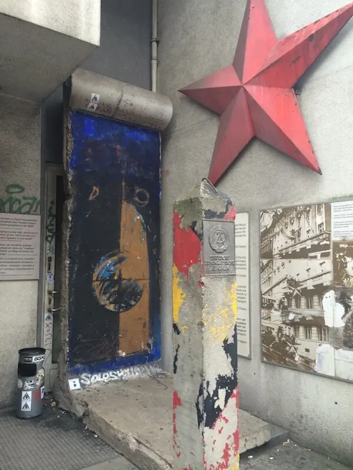
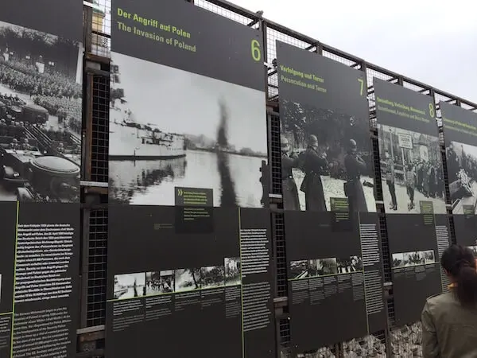
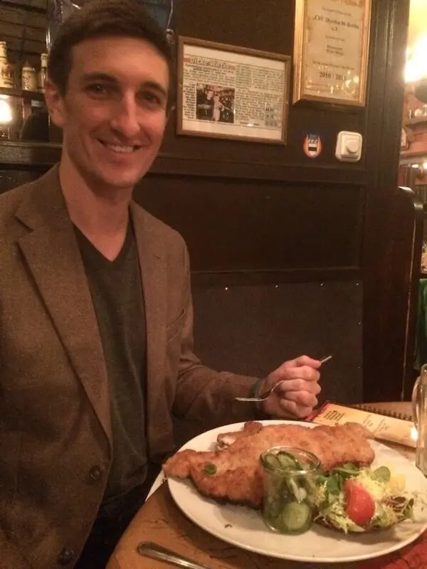

Berlin
Info
| Summary | Reflections on my first trip Berlin. |
|---|---|
| Shared | 2014-09-11 |
| Revised | 2023-02-04 @ 18:00 UTC |
Traveling to Berlin for the first time, one cannot help but marvel at a city and people so steeped in painful history. All Americans learn of the Berlin where Hitler ruled, where the Russians paraded down the streets after they reached the city before the other Allies could and where the Berlin Wall was erected and felled. While this is not the city that exists today, there are bold, powerful reminders hidden throughout the city that remind the populace and visitors of what happened so that no one may ever forget. While I did not travel here under the pretense of historical appreciation, the knowledge of past events and an appreciation of its people made my trip all the more rich.
Three weeks ago, a business partner and I received an email invitation from an event company, hy!, asking if we would like to attend and participate in a mobility conference in Berlin. Naturally, we said “yes!” without hesitation. After forgetting my passport, missing my first flight and running in to Tyrion Lannister (Peter Dinklage) in the Gatwick, London airport, I finally made my way to Berlin.
The AirBNB accomodations were thankfully booked by my business partner, Marty, who joined me on this trip. We stayed in a clean studio apartment with a balcony near the Uhlandstraße train station.


Given Marty was no stranger to the area, my first night consisted of a walking tour through the streets around our AirBNB with 0,5L-sized beers in hand (this is actually legal).
The following day consisted of attending the hy! mobility conference. In attendence were representatives from very impressive companies, including
and various other noteworthies. There were three group workshop sessions that debated various trends, upcoming technologies, issues and recent regulatory hurdles (sorry, Uber) many of the companies face. I felt incredibly welcome during the conference and was happy to be surrounded by so many passionate players in the mobility game.

After the conference, the attendees of the conference were allowed to drive brand new Audi A4s around Berlin to the location of our dinner, Tiergarten. Sadly, neither I nor Marty possessed German drivers’ licenses, so we had to ride in the back. Our "driver," John, and our Audi representative, Kathleen, decided we would not be going straight to Tiergarten and would be instead taking a slight detour to test the car’s capabilities along a more scenic route. Kathleen was hilarious (a great saleswoman!), and John drove like a pro.
The evening consisted of many half-liter beers, tons of food and fantastic company at the restaurant in the heart of Tiergarten.

German beer plus a late night equals a very late start the following morning! Once revived, Marty and I made our way to the headquarters of Berlin’s Startup Bootcamp for Marty’s meeting with the heads of a fellow GAN (Global Accelerator Network) accelerator (backstory: Marty is the Managing Director of The Iron Yard accelerator, also part of the GAN family, that is based in Greenville, SC). We arrived amidst a throng of camera crews interviewing startups who were prepping for in-depth sessions with mentors. Tanja (the co-MD) and Louise received us. While we were treated to free cappuccino and lunch and had a nice time speaking with Louise and a few startups, one thing I know from living in the South is that if you have guests in your house, you should never leave them to wander and, instead, should keep someone with them at all times. Meandering about someone’s home/open office space can be an awkward experience. Alas, this was not the case with us while we were guests, but I suppose they were simply too busy.

The remainder of our day carried us all over Berlin. We consulted Google Maps for our dinner and found a fantastic place, Dicke Wirtin, near our AirBNB around the corner from Uhlandstraße. We sat at a table with two middle-aged German men who were nice as they could be, ate shnitzel, and drank. I absolutely recommend visiting this place if you visit the area!
Below are a few images from the day & night.



My time in Berlin was an odd mix of the new with the antiquated; the shiny with the faded and dull; excitement for the future existing alongside the pain of the past. I thoroughly enjoyed every moment of my time here. Now, having embraced the friendliness of the people, tasted the delicious food and viewed marvelous structures, I must visit Berlin again!